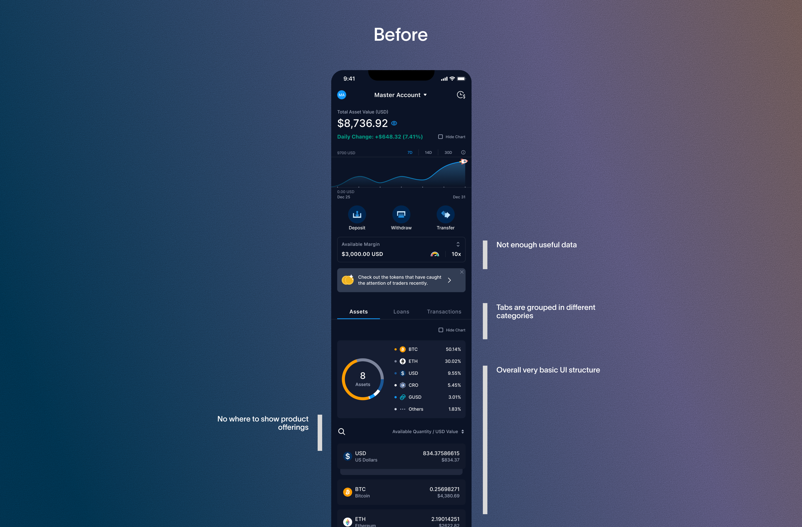
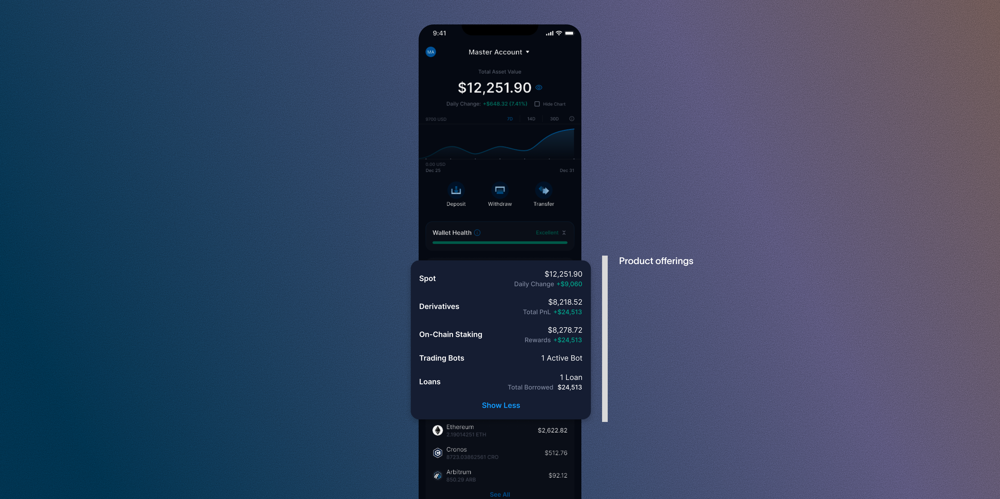
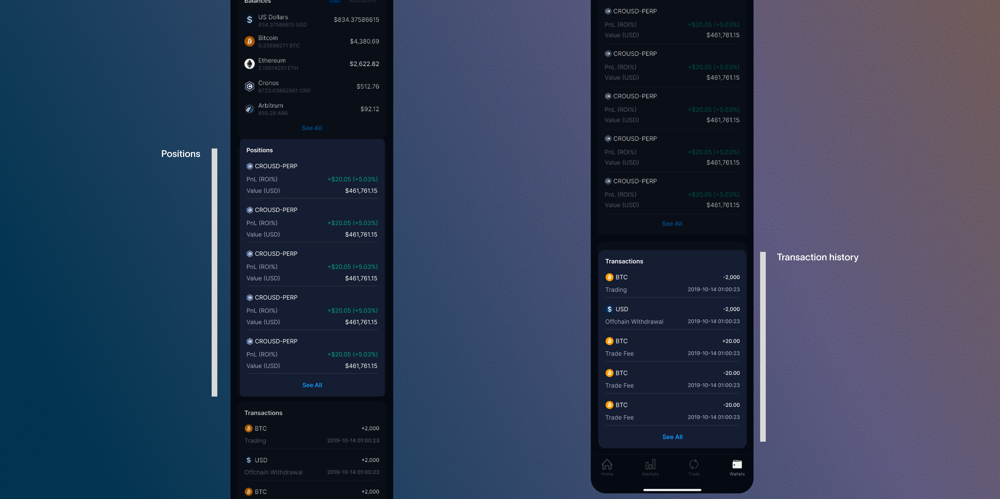
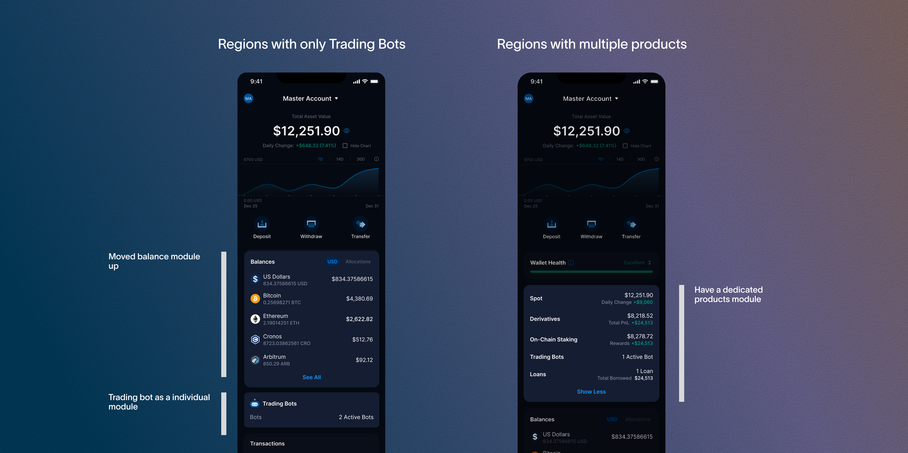

The Crypto.com Exchange App's wallet tab hadn't been updated since 2021. As trading behaviours evolved and the product expanded, the tab struggled to keep up — users had no visibility into PnL, no easy access to their positions, and no sense of the full range of products available to them. I redesigned it from the ground up to give traders the clarity and confidence they needed to make better decisions.

How might we give active traders a clearer, more actionable view of their portfolio, with less friction accessing positions and transaction history?
The original wallet tab, built in 2021, served a simpler product at a simpler time. By the time I began this redesign, it was showing its age:
- Tab items were grouped inconsistently, with no clear hierarchy
- There was no dedicated space to highlight product offerings
- Key trading data was either missing or hard to find
- The overall structure was too basic to support the decisions traders were trying to make
Users weren't lacking the data — the product just wasn't surfacing it in a way that was useful.

I ran a workshop to align the team on where the existing wallet tab fell short. Four pain points came out of that process, and became the foundation for every design decision that followed:
- 01Insufficient data and visual representation of the portfolio's performance
- 02Lack of visibility into stats such as PnL and daily changes
- 03Absence of token-specific details, including token cost and average price
- 04Inability to view PnL across all product features
With limited engineering resources, I prioritised solutions that reused existing data and components, presenting them in a more meaningful way rather than building net-new infrastructure.
I analysed two key competitors — Binance and Kraken — to understand how leading exchanges approached wallet-level information architecture. No single competitor had a complete solution, but collectively they pointed to a clear industry direction: the wallet tab should be a hub for portfolio insight, not just a balance summary. Kraken offered the most complete experience among those I studied, while Binance had stronger cross-sell integration but lacked transaction visibility. Crypto.com Exchange App trailed on all fronts — which represented a clear opportunity to close the gap while driving cross-sell through existing product offerings in a way competitors hadn't fully explored.
| Feature | Binance | Kraken | Crypto.com Exchange App (before) |
Crypto.com Exchange App (after) |
|---|---|---|---|---|
| PnL visibility | ✅ | ✅ | ❌ | ✅ |
| Product cross-sell | ✅ | ✅ | ❌ | ✅ |
| Token-level detail | ✅ | ✅ | ❌ | ✅ |
| Transaction history visibility | ❌ | ✅ | ❌ | ✅ |
| Position visibility | ❌ | ❌ | ❌ | ✅ |
There was no space in the wallet tab to highlight Crypto.com Exchange App's product offerings, so I introduced a section combining product performance data with a discovery path into unexplored products.
I introduced a new section to the wallet tab that highlights Crypto.com Exchange App's product offerings alongside key performance data, including PnL and daily changes. For users already engaged with a product, it provides at-a-glance insight. For those who haven't explored it yet, it serves as a natural entry point to learn more.

Positions were buried within the trading UI and transaction history was hard to find, so I brought both into the wallet tab in one place.
Based on user feedback, this fragmentation made it hard to get a complete picture while actively trading. I brought both into the wallet tab, giving users everything they needed in one place without interrupting their trading flow.

Most regions only had access to one product — Trading Bots, with no On-Chain Staking, Derivatives, or Loans — so I split Trading Bots into its own module instead of forcing every region through the same multi-product structure.
Once I understood the extent of regional variation in product availability — some regions didn't have access to certain products, like Trading Bots — I recognised the wallet tab couldn't keep treating every user the same. I restructured the wallet tab into distinct modules, separating Trading Bots into its own module so it could be configured independently by region. This gave the flexibility to serve users accurately regardless of where they were, while keeping the overall experience consistent.

The restrictions I was working within — limited engineering resources, regional variation in product availability, and an existing component library — pushed me toward more creative, deliberate solutions. My strongest ideas came from reframing what already existed rather than building something new.
I didn't anticipate the extent of regional variation until I was already deep into the design process. It's a pattern I now actively work against — I push to surface technical and geo constraints as design requirements at the start of a project, not as discoveries midway through.
This project involved more back-and-forth than almost anything I'd worked on before. Navigating competing constraints while still delivering something meaningful taught me how to stay anchored to the core problem when everything else around it kept shifting.
The redesigned wallet tab launched in late 2024, consolidating portfolio performance, product discovery, and transaction history into a single, cohesive experience. While post-launch analytics were owned by the product team, internal feedback highlighted the improved clarity of the PnL section and the value of bringing positions into the wallet tab.
This project also laid the groundwork for a larger, ongoing redesign of the full Crypto.com Exchange App — informed by what I learned here about user needs and the limitations of the existing design system.